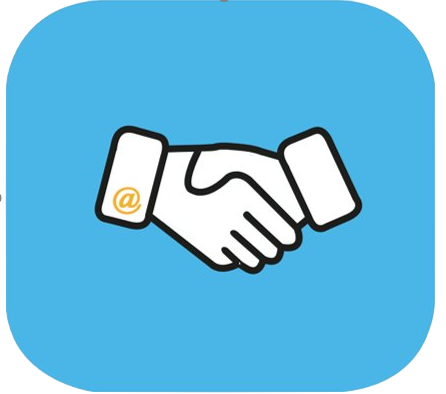
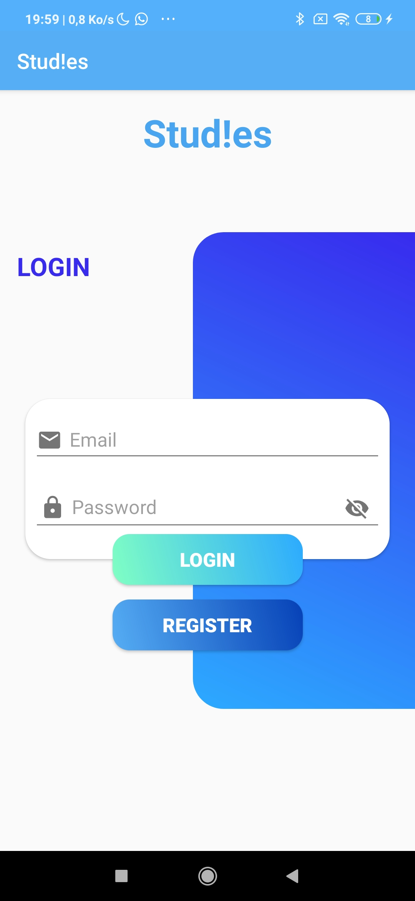

<
Studie's
Une application d'entre aide
Studie's était une application qui avait pour but de facilité l'entre aide inter élève mais aussi entre les élèves actuels et anciens élèves. Elle permettait le partage de note prise en cours et facilitait la recherche de stage / alternance. Elle permetait l'intégration et une refonte de l'ENT actuel en améliorant certains points faibles.
Un groupe d'amis
Cette idée d'application vient d'un groupe d'amis voulant réunir leurs différentes connaissances en un seul et même projet. Nous étions quatre avec des connaissances en informatique, communication, marketing et design.
En pleine pandémie, et surtout en se rendant compte que dans l'école on ne connaissait pas spécialement du monde, nous avons donc eu l'idée de faire en sorte de faciliter cette création de lien.
Voici le squelette de l'application
Nous avions fait un logIn et Register fonctionnel à l'aide de FireBase.

Voici une vidéo des différents menus qu'aurait proposée l'application.
Un menu accueil avec l'actualité de l'école et les stories proposées par les étudiants.
Un menu pour la recherche de stage (visuel pas fait).
Un troisième menu afin d'accéder à des fiches métiers, d'entreprise et d'alumnis afin de se renseigner sur n'importe quel sujet professionnel.
Et pour finir un système de tchat afin d'échanger avec les anciens et nouveaux étudiants.
Un arrêt sec
Le projet a été mis en arrêt suite à un rendez-vous pris avec notre directeur d'école et les différents directeurs de pôle. Ils ont trouvé notre projet comme une bonne tentative entrepreneuriale car nous avions fait des analyses concurencieles, des benchmarks, un business model et business plan, cependant le projet avait plein de faiblesse afin de respecter tout ce qui était RGPD par exemple. Tous les problèmes énoncés nécessitaient une refonte totale de notre projet, ce dont on n'était pas prêt, d'où l'arrêt du projet.
La leçon dont nous avons tiré de ce projet est qu'il ne faut surtout pas se précipiter dans un projet, c'est quelque chose qui doit être fait dans la longueur pour une qualité assurée au moment d'une présentation par exemple.